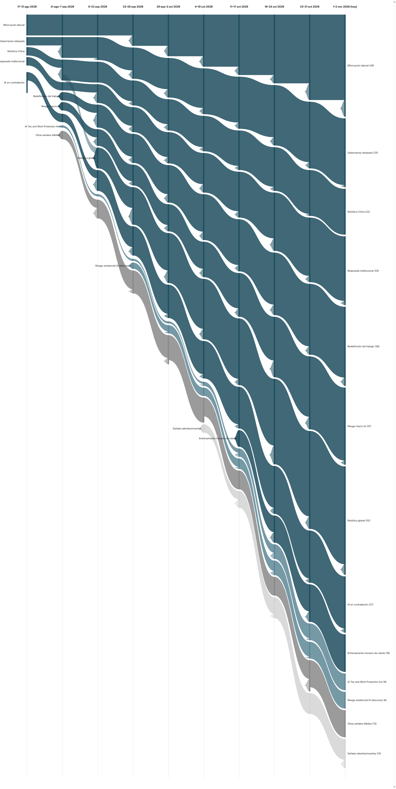

|
Vigilancia Tecnológica Competitiva
Señales del cambio
Semana 10 · 9 de noviembre de 2026
Cuatro señales alcanzan por primera vez el estado "muerta" del registro, mientras la bandeja de observaciones muestra una semana entera sin cobertura catalogada — un bache de datos que preferimos señalar abiertamente antes que rellenar. Entre lo que sí llegó: un ejecutivo de Microsoft admite que la IA está acabando con la escalera de carrera tradicional, y Meta se suma a OpenAI y Tesla en la carrera por el hardware humanoide.
|
Resumen ejecutivo
49 observaciones nuevas procesadas, todas con fecha de captura del 1 o 2 de noviembre (la base histórica no registró observaciones adicionales en el periodo). Aviso de cobertura: la bandeja no muestra observaciones catalogadas entre el 3 y el 8 de noviembre pese a que ha transcurrido una semana completa desde el cierre de la edición anterior; en lugar de rellenar ese vacío con contenido inventado, lo señalamos explícitamente — si la bandeja se actualiza retroactivamente, esos días se incorporarán en la próxima edición. De las 49 observaciones, se citan explícitamente 26; otras 3 son re-cobertura del mismo hecho ya contado. El registro se mantiene en 25 señales, pero cambia de composición: 9 fuertes, 5 débiles con potencial de escalar, 0 débiles activas sin tendencia alcista, 7 en estado latente (dos más que la semana pasada), y 4 señales alcanzan por primera vez el estado "muerta" tras ocho ediciones sin evidencia nueva.
Los tres movimientos más relevantes de la semana:
- Cuatro señales débiles del registro (OpenExecutive, el centro NSF de coadaptación, la plataforma china de IA encarnada y la predicción de Musk) pasan a estado "muerta" tras ocho ediciones consecutivas sin evidencia nueva — la primera vez que el registro cruza este umbral desde que existe.
- Un ejecutivo de Microsoft reconoce públicamente que la IA está acabando con la escalera de carrera tradicional en roles técnicos, y que su reemplazo exige nuevas cargas de mentoría sénior — la primera fuente interna de una gran tecnológica en admitir el problema que la señal de bifurcación laboral lleva documentando desde agosto.
- Meta construye un prototipo de robot humanoide junto a la startup china Fourier, sumándose a OpenAI y Tesla como gigante de IA pura que ya desarrolla hardware físico, mientras el CEO de Amazon declara que la empresa busca "eliminar todo trabajo mundano y repetitivo" en sus almacenes mediante robots.
|
|
Principales insights
1. El registro cruza por primera vez el umbral de señal "muerta".
OpenExecutive (la herramienta de IA que sustituía funciones de CEO), el centro NSF de coadaptación humano-robot, la plataforma pública china de IA encarnada y la predicción de Musk sobre 20-30 billones de dólares anuales llevan ocho ediciones consecutivas —dos meses— sin una sola observación nueva que las respalde. Siguiendo la metodología del registro, pasan de "latente" a "muerta".
Implicación: no todas las señales iniciales de agosto maduran en tendencias sostenidas; el propio registro empieza a distinguir con datos, no con intuición, cuáles eran ruido pasajero y cuáles se consolidaron en los nueve ejes macro que siguen creciendo semana a semana.
|
|
Señales de la semana
|
|
Gráfico de evolución
Flujo de las 9 señales macro y las dos señales débiles más notorias, a lo largo de diez periodos. El grosor de cada banda es proporcional al número de evidencias que la respaldan. Desde esta edición, la banda gris claro agrega tanto las señales latentes como las que ya alcanzaron el estado "muerta".

|
|
Descripción textual del gráfico (por si no se renderiza la imagen): De izquierda a derecha, diez columnas temporales desde 17–31 ago 2026 hasta 1–2 nov 2026 (hoy). Las nueve señales macro llegan a la última columna con anchos distintos según su evidencia acumulada: Robótica global sigue siendo, con mucha diferencia, la más gruesa (52), seguida de Bifurcación laboral (49), Riesgo macro IA (37), Redefinición del trabajo (38), Gobernanza rebasada y Respuesta institucional (33 cada una), IA en contratación (27), Robótica China (22), y Entrenamiento humano de robots (18). De las señales débiles, se muestran como bandas propias las dos con más evidencia: AI Tax and Work Protection Act y la escalada del discurso de riesgo existencial de la IA (8 cada una, empatadas). La banda "Señales latentes/muertas" crece a 14 evidencias acumuladas y por primera vez incluye cuatro señales en estado "muerta" (OpenExecutive, el centro NSF de coadaptación, la plataforma china de IA encarnada y la predicción de Musk), agregadas junto a las siete señales latentes.
|
|
Señales a tener en cuenta
- Cuatro señales llegan a "muerta". OpenExecutive, el centro NSF de coadaptación humano-robot, la plataforma china de IA encarnada y la predicción de Musk salen del seguimiento activo tras ocho ediciones sin evidencia nueva — el primer caso del registro en cruzar este umbral.
- Robots-soldado y "IA performativa" pasan a latente. Ambas llevan ya cuatro ediciones consecutivas sin evidencia nueva propia.
- Resistencia directa a robots. Suma un nuevo modo de resistencia individual: una exención religiosa/humanista para no usar IA en el trabajo, distinta de la protesta colectiva que la señal venía documentando.
- Efecto bumerán. Un artículo de AP ampliamente sindicado convierte el fenómeno en tema de periodismo de servicio ("qué evaluar si tu antigua empresa te pide volver"), señal de que ya se asume como suficientemente común.
|
|
Movimientos del histórico
Pasan a "muerta" (primera vez): OpenExecutive, el centro NSF de coadaptación humano-robot, la plataforma pública china de IA encarnada y la predicción de Musk, tras ocho ediciones consecutivas sin evidencia nueva.
Pasan a latente: robots-soldado con financiación privada/Pentágono e "IA performativa", tras cuatro ediciones consecutivas sin evidencia nueva — el registro llega a 7 señales latentes.
Sin evidencia propia por primera vez: Robótica China y Entrenamiento humano de robots no suman evidencia nueva esta edición, tras varias semanas consecutivas de crecimiento — su primera pausa, no necesariamente el inicio de un declive.
|
|
Cierre
Pregunta abierta: esta semana un ejecutivo de Microsoft admitió abiertamente que la IA está rompiendo la escalera de carrera tradicional, y que arreglarlo exige más tiempo de mentoría sénior, no menos. Si tu organización ya usa IA para absorber tareas que antes hacían los perfiles júnior: ¿has presupuestado ese tiempo extra de supervisión sénior, o estás contando el ahorro de la IA sin contar su coste oculto?
Metodología: cada señal es trazable a observaciones concretas en la base de vigilancia. Una señal pasa a "latente" tras 4 ediciones sin evidencia nueva, y a "muerta" tras 8; esta edición, cuatro señales cruzan ese segundo umbral por primera vez.
|
|